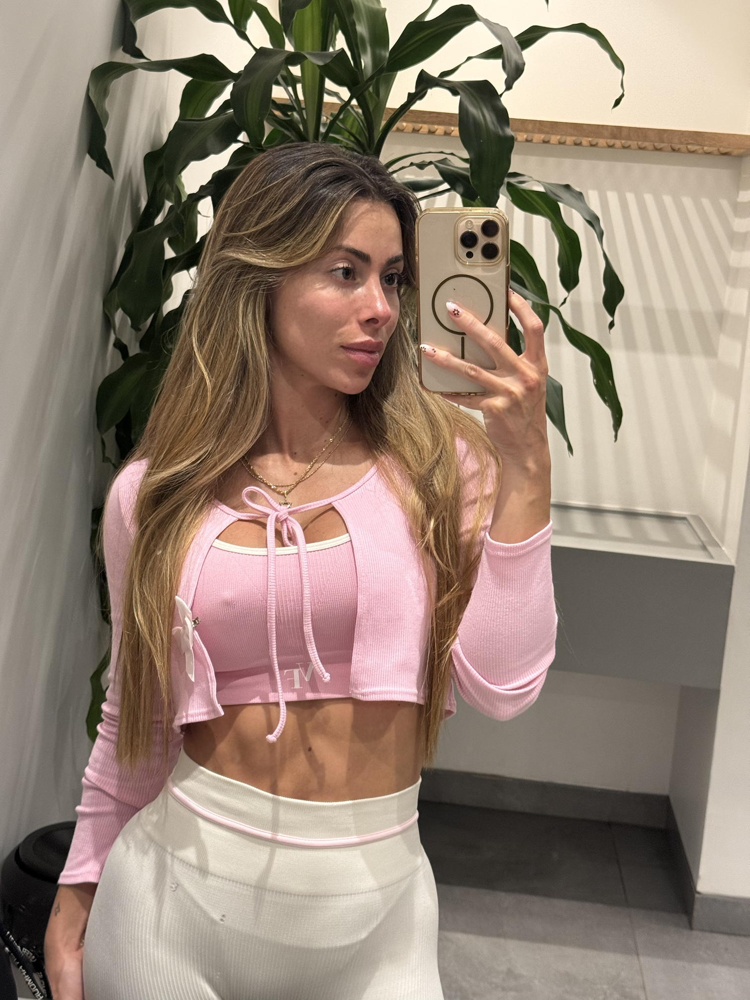
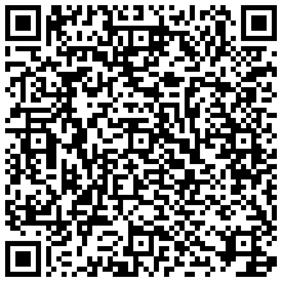

Los cinco perfiles de mujer: cómo lo que viviste habita hoy en tu cuerpo, tu placer y tus vínculos
Si estás leyendo esto, algo dentro de ti ya ha empezado a moverse.
Quizá sientes que tu cuerpo está lejos, que el placer te cuesta, que dices que sí cuando querías decir que no, o que te entregas en tus relaciones hasta perderte.
Nada de eso es un defecto. Es la forma en que tu cuerpo aprendió a cuidarte a partir de lo que viviste.
En estas páginas vas a encontrar un test sencillo, cinco perfiles de mujer en los que quizá te reconozcas y una práctica para empezar a volver a ti.
Léelo despacio, sin juicio y con una mano en el corazón. Tu cuerpo recuerda, y también puede aprender algo nuevo: que ahora está a salvo.
Con amor,
Deisy
Este ebook habla de experiencias que pueden remover emociones. Por eso, antes de seguir, te pido tres cosas:
Si algo se mueve fuerte dentro de ti, para, respira y vuelve cuando quieras. No hay prisa.
Los perfiles son una herramienta de autoconocimiento. No sustituyen la atención psicológica, médica ni terapéutica.
Si estás viviendo una situación de violencia ahora mismo, pide ayuda:
Línea 155: orientación a mujeres víctimas de violencia (Colombia) · Línea 123: emergencias.
Lo que la mente prefiere olvidar, el cuerpo lo guarda.
Cuando vivimos situaciones en las que nuestro cuerpo o nuestros límites no fueron respetados, el cuerpo aprende a protegerse. Esas experiencias pueden venir de la infancia, de una pareja, de comentarios sobre tu cuerpo o de una educación que te enseñó que el placer era algo prohibido.
Esa protección aparece de formas distintas:
Desconectarse para no sentir.
Complacer para evitar el conflicto.
Defenderse levantando una muralla.
Buscar fuera la mirada que confirme tu valor.
Todas son estrategias de supervivencia. En su momento te ayudaron. Hoy quizá te impiden disfrutar de tu cuerpo, de tu sexualidad y de tus relaciones.
La buena noticia: lo que se aprendió, se puede transformar.
El test recorre cinco áreas de tu vida íntima. Juntas dibujan cómo vive hoy en ti lo que viviste.
Si lo habitas o lo evitas, y cómo te miras frente al espejo.
Si tu valor nace de ti o depende de la mirada y el deseo de los demás.
Si vives tu placer desde la presencia, la culpa, el control o la búsqueda.
Qué haces cuando alguien te pide algo íntimo que no te apetece.
Los patrones que se repiten cuando amas.
Elige en cada pregunta la respuesta que más se parezca a ti hoy y apunta su letra. Responde con lo primero que sientas.
Cuenta tus letras:
La letra que más se repite es tu perfil principal. Si dos letras están casi empatadas, lee las dos: la mayoría de mujeres tenemos un perfil principal y otro secundario.
Mayoría de A · La mujer dormida pág. 09
Mayoría de B · La mujer que complace pág. 10
Mayoría de C · La mujer amurallada pág. 11
Mayoría de D · La mujer que busca ser vista pág. 12
Mayoría de E · La mujer que despierta pág. 13
Lee tu perfil sin juzgarte. Cada uno describe una forma de protección y también un don que llevas dentro.
No eres tu perfil. Tu perfil es solo el punto desde el que empiezas a caminar.
Tu cuerpo aprendió a desconectarse para protegerte.
Tu don: esa desconexión te ayudó a sobrevivir. No hay nada roto en ti. Tu cuerpo solo espera sentirse a salvo para despertar.
Siéntate cinco minutos en un lugar tranquilo. Nombra en voz baja cinco cosas que ves, cuatro que puedes tocar, tres que oyes, dos que hueles y una que saboreas. Termina con una mano en el pecho y tres respiraciones lentas.
Aprendiste que estar a salvo era tener contentos a los demás.
Tu don: tienes una enorme capacidad de amar y de percibir a los demás. Ahora toca dirigir esa mirada hacia ti.
Durante una semana, di que no a una cosa pequeña cada día: una invitación, un favor, un plan que no te apetece. Por la noche, escribe qué sentiste en el cuerpo antes y después. Cada límite es un acto de amor propio.
Construiste una muralla para que nadie volviera a hacerte daño.
Tu don: tu fuerza es real. Ahora puedes elegir a quién abres la puerta, en lugar de cerrarla a todos.
Crea un pequeño ritual diario: una vela, una manta, tu música. Inhala contando cuatro y exhala contando seis, durante cinco minutos. Al exhalar, suelta la mandíbula y los hombros. Tu cuerpo aprende que puede bajar la guardia.
Aprendiste a medir tu valor en la mirada y el deseo de los demás.
Tu don: tu magnetismo y tu energía erótica son un regalo. Ahora puedes vivirlos desde ti, y no para conseguir amor.
Una vez por semana, regálate veinte minutos a solas haciendo algo que te dé placer: un baño, bailar, vestirte para ti. Sin fotos y sin contárselo a nadie. Después, escribe cómo te sentiste cuando nadie te miraba.
Ya has empezado tu camino de regreso a ti.
Tu don: tu consciencia. Ya no vives en piloto automático: estás lista para profundizar.
Después de la ducha, pon un poco de aceite en tus manos y recorre tu cuerpo despacio, de los pies a la cara. En cada zona, di en silencio: «gracias por cuidarme». Es un primer paso hacia una sexualidad vivida como algo sagrado.

Terapeuta integral. Acompaño a mujeres en su retorno sagrado a su cuerpo y a su placer.
Desde Alma Sana acompaño a mujeres de todo el mundo a sanar la relación con su cuerpo, su sexualidad y sus vínculos, con una mirada que une lo emocional, lo corporal y lo espiritual.
Ya conoces tu perfil. Ahora podemos mirar juntas qué necesita tu cuerpo para sentirse a salvo, sentir placer y elegir.
Escríbeme por WhatsApp contándome qué perfil te salió y qué sentiste al leerlo. Te responderé personalmente para ver qué acompañamiento encaja contigo.

Este ebook es una herramienta de autoconocimiento y no sustituye la atención psicológica o médica. Si estás viviendo una situación de violencia: Línea 155 (orientación a mujeres, Colombia) · Línea 123 (emergencias).